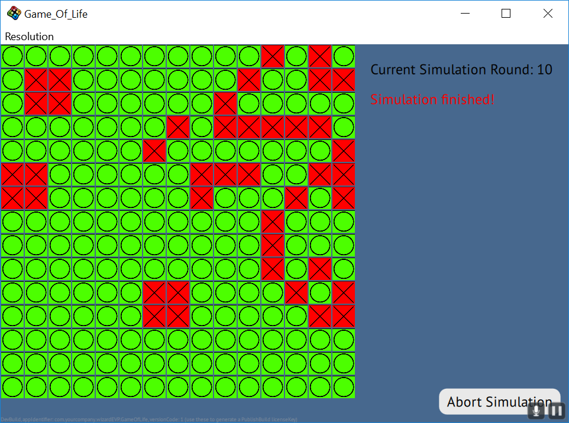
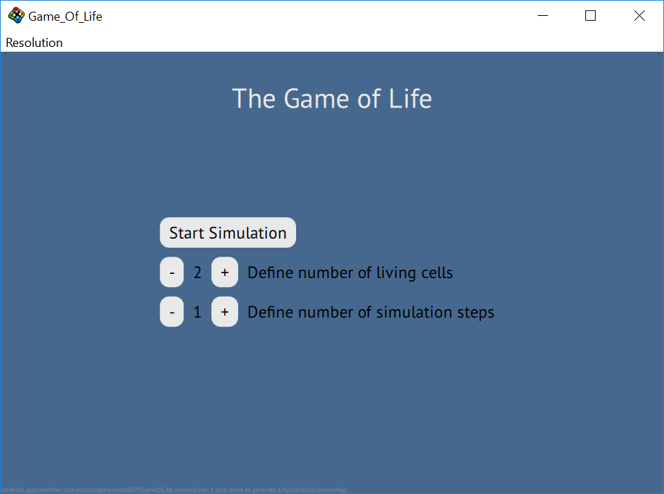
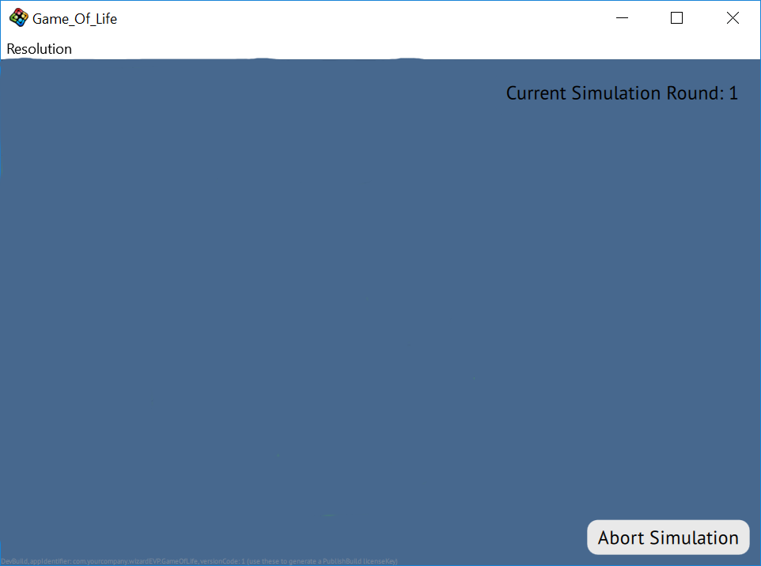
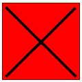
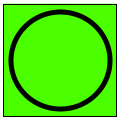
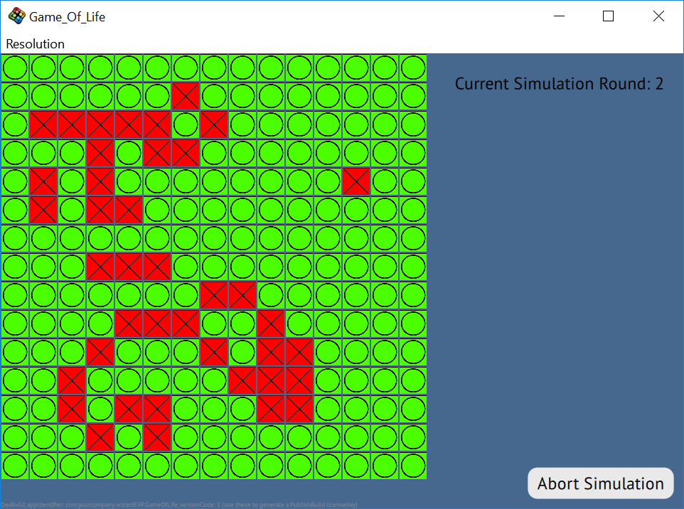

This tutorial is about the famous cellular automaton by John Conway - referred to as Conway's Game of Life. It will concentrate on implementing a basic version of this simulation but will also partly cover topics like "multiple scenes", organizing UI elements on the screen and entity communication.
Create a new empty V-Play project with the name Game_Of_Life. Inside the qml directory of your project, create the following new folders: entities & scenes (which we will need later).
So lets talk briefly about the basic idea and facts of Game of Life (for more detailed info, visit the link above).
This already tells us that there are some settings to be adjusted before the actual simulation can start. Therefore it makes sense to start with how we want to split up the game buy using multiple scenes.
When having multiple versions of the same type, it is always a good idea to think about characteristics they all have in common. If there are enough, its worth creating a common base version. In our case we want to have two different scenes. One as the menu where we can define all the different settings for our simulation and a second one for the simulation itself.
Lets start by adding a new scene under the scenes folder - namely SceneBase.qml.
import VPlay 2.0 import QtQuick 2.0 // The base for our scenes Scene { id: sceneBase // The "logical size" - the scene content is auto-scaled to match the GameWindow size width: 320 height: 480 // By default, set the opacity to 0 - this will be changed from the Main.qml with PropertyChanges opacity: 0 // We set the visible property to false if opacity is 0 because the renderer skips invisible items, this is an performance improvement visible: opacity > 0 // If the scene is invisible, we disable it enabled: visible // Background Rectangle { anchors.fill: parent.gameWindowAnchorItem color: "#47688e" } }
So what do we already see:
Now its time for the menu scene, which will not only be the place where we define the conditions for our simulation, but also the thing we see before and after a simulation. Add again a new scene in the scenes folder and name it MenuScene.qml.
import VPlay 2.0 import QtQuick 2.0 // The Menu Scene SceneBase { id: menuScene // Headline with the name of the app Text { anchors.horizontalCenter: parent.horizontalCenter y: 30 font.pixelSize: 30 color: "#e9e9e9" text: "The Game of Life" } }
Not yet much to see her but this will change soonish. First thing to note is that we do not use "Scene" for our type definition but instead our own defined type e {SceneBase} - which is important because else our base class would't make too much sense ;) Also note that we did not have to add an additional import to be able to use our own type - this is due to it being in the same folder as this file. We will later see how it looks like to import something. Beside these things, we added a nice headline for our app, prominently spelling its name.
The last scene we add is the one where our simulation will take place. Add it as before under scenes with the name GameScene.qml.
import VPlay 2.0 import QtQuick 2.0 // The Game Scene SceneBase { id: gameScene property bool simulationRunning: false sceneAlignmentY: "top" sceneAlignmentX: "left" // The entitiy manager which will store all cells of our board EntityManager { id: cellBoardEntityManager entityContainer: gameScene } }
Some new things here to mention. The bool property will be needed in the future to tell us if the simulation is still running. The EntitiyManager is not yet used but will be needed when we create our cells for the board.
All basic scene versions are in place, so its time to put them to use. Also we can now define our Main.qml - which got auto created with new project.
import VPlay 2.0 import QtQuick 2.0 import "scenes" GameWindow { id: gameWindow screenWidth: 960 screenHeight: 640 property int setupLivingCells: 2 property int setupSimulationSteps: 1 property int currentSimulationStep: 0 MenuScene { id: menuScene } GameScene { id: gameScene } }
First thing to note is the additional import, so we have access to our defined scenes. In preperation we also added three integer properties:
And last but not least, we have the definitions for our newly created scenes.
So our scenes are in place but as for now, there is no activity possible. We want to switch between the scenes and for this we need the functionality itself and something to trigger it. For the functionality, we already added some properties to the SceneBase, which we will put to use now. Add the following to your Main.qml:
...
GameWindow {
...
// Default state is menu -> Default scene is menuScene
state: "menu"
activeScene: menuScene
// State machine, takes care of reversing the PropertyChanges when changing the state
states: [
State {
name: "menu"
PropertyChanges {target: menuScene; opacity: 1}
PropertyChanges {target: gameWindow; activeScene: menuScene}
},
State {
name: "game"
PropertyChanges {target: gameScene; opacity: 1}
PropertyChanges {target: gameWindow; activeScene: gameScene}
}
]
}
The solution is to use a StateMachine. The GameWindow has the property state which we set to menu because the menu scene is the place where we want to start. The above code defines what should happen on the specific state changes. It will be browsed through and do what is set up. This is on one hand, to change the opacity of the scene where we wanna go (which through the set up properties also implicitly changes visible and enabled). On the other hand we change the activeScene property to the one we want.
Now that the functionality to switch scenes is in place, we need UI elements to trigger them. Since we will need several buttons (not only for switching), we should create a reusable one. Add a MenuButton.qml file to the entities folder, with the following content:
import QtQuick 2.0 Rectangle { id: button // The horizontal margin from the Text element to the Rectangle at both the left and the right side property int paddingHorizontal: 10 // The vertical margin from the Text element to the Rectangle at both the top and the bottom side property int paddingVertical: 5 // access the text of the Text component property alias text: buttonText.text // this handler is called when the button is clicked. signal clicked // This will be the default size, it is same size as the contained text + some padding width: buttonText.width + paddingHorizontal * 2 height: buttonText.height + paddingVertical * 2 color: "#e9e9e9" // round edges radius: 10 Text { id: buttonText anchors.centerIn: parent font.pixelSize: 18 color: "black" } MouseArea { id: mouseArea anchors.fill: parent hoverEnabled: true onClicked: button.clicked() onPressed: button.opacity = 0.5 onReleased: button.opacity = 1 } }
We need one button in the menuScene to switch to the gameScene and with it, a signal:
...
import "../entities"
SceneBase {
id: menuScene
// Signal indicating that the gameScene should be displayed and the simulation can start
signal startSimulationPressed
...
// UI for setting up the simulation details
Column {
anchors.centerIn: parent
spacing: 10
MenuButton {
text: "Start Simulation"
onClicked: startSimulationPressed()
}
}
}
With this, we can extend our menuScene instance at Main.qml:
MenuScene {
id: menuScene
onStartSimulationPressed: doStartSimulationPressed();
}
function doStartSimulationPressed() {
gameWindow.state = "game"
}
Be accessing the signal receiver, we can either do a single statement or call a function to do multiple things. doStartSimulationPressed will be extended in the future. If you run the game now, switching from menu to simulation is possible but we still need to provide a way to go the other way round. But instead of adding a new signal to gameScene, we will make use of the already per default existing one for back-buttons. Add this code to GameScene.qml:
// Back button to leave simulation MenuButton { anchors.right: gameScene.gameWindowAnchorItem.right anchors.rightMargin: 10 anchors.bottom: gameScene.gameWindowAnchorItem.bottom anchors.bottomMargin: 10 text: "Abort Simulation" onClicked: backButtonPressed() }
And extend our gameScene instance in Main.qml:
GameScene {
id: gameScene
onBackButtonPressed: doResetSimulation()
}
function doResetSimulation() {
gameWindow.state = "menu"
gameScene.simulationRunning = false
setupLivingCells = 2
setupSimulationSteps = 1
currentSimulationStep = 0
}
If you start the game now, you will see the menu and be able to switch to simulation and back. Great job!
Its time get our fingers on the settings we want to change and display for the simulation. The button functionality for the changes exists - whats missing is a label to show the settings. Therefore create a MenuLabel.qml in the entities folder with this content:
import QtQuick 2.0 Rectangle { id: label // the horizontal margin from the Text element to the Rectangle at both the left and the right side. property int paddingHorizontal: 10 // the vertical margin from the Text element to the Rectangle at both the top and the bottom side. property int paddingVertical: 5 // access the text of the Text component property alias text: labelText.text property alias textColor: labelText.color // this will be the default size, it is the same size as the contained text + some padding width: labelText.width + paddingHorizontal * 2 height: labelText.height + paddingVertical * 2 color: "#47688e" // round edges radius: 10 Text { id: labelText anchors.centerIn: parent font.pixelSize: 18 color: "black" } }
With the new type at hand, we can finalize our MenuScene.qml by adding all the signals, correspondings buttons and labels we need:
import VPlay 2.0 import QtQuick 2.0 import "../entities" // The Menu Scene SceneBase { id: menuScene // Signal indicating that the gameScene should be displayed and the simulation can start signal startSimulationPressed // Signals to trigger an in-/decrease of living cells at the begin of the simulation signal increaseLivingCells signal decreaseLivingCells // Signals to trigger an in-/decrease of simulation steps to be performed signal increaseSimulationSteps signal decreaseSimulationSteps // Headline with the name of the app Text { anchors.horizontalCenter: parent.horizontalCenter y: 30 font.pixelSize: 30 color: "#e9e9e9" text: "The Game of Life" } // UI for setting up the simulation details Column { anchors.centerIn: parent spacing: 10 MenuButton { text: "Start Simulation" onClicked: startSimulationPressed() } Row { MenuButton { text: "-" onClicked: decreaseLivingCells() } MenuLabel { text: setupLivingCells } MenuButton { text: "+" onClicked: increaseLivingCells() } MenuLabel { text: "Define number of living cells" color: "#47688e" } } Row { MenuButton { text: "-" onClicked: decreaseSimulationSteps() } MenuLabel { text: setupSimulationSteps } MenuButton { text: "+" onClicked: increaseSimulationSteps() } MenuLabel { text: "Define number of simulation steps" color: "#47688e" } } } }
Each in-/decrease for cells and steps get a separate signal and button. The labels are used to display the actual number and description of what happens. We also make of Column & Row to neatly organize all this elements on the screen. The next step is to create the handlers in Main.qml:
MenuScene {
id: menuScene
onStartSimulationPressed: doStartSimulationPressed();
onIncreaseLivingCells: doIncreaseLivingCells();
onDecreaseLivingCells: doDecreaseLivingCells();
onIncreaseSimulationSteps: doIncreaseSimulationSteps();
onDecreaseSimulationSteps: doDecreaseSimulationSteps();
}
function doIncreaseLivingCells() {
if (setupLivingCells < gameScene.getNumberOfCells())
++setupLivingCells;
}
function doDecreaseLivingCells() {
if (setupLivingCells > 0)
--setupLivingCells;
}
function doIncreaseSimulationSteps() {
++setupSimulationSteps;
}
function doDecreaseSimulationSteps() {
if (setupSimulationSteps > 1)
--setupSimulationSteps;
}
The functions needed some checks for boundaries - like it should not be possible to setup more cells than the board can actually host. Starting the game now will present you with this beautiful menu:

Whats left regarding UIs, are the needed elements in the GameScene.qml:
// UI displaying infos about the current state Column { anchors.right: gameScene.gameWindowAnchorItem.right anchors.rightMargin: 10 anchors.top: gameScene.gameWindowAnchorItem.top anchors.topMargin: 10 Row { MenuLabel { text: "Current Simulation Round: " + currentSimulationStep paddingVertical: 10 } } Row { MenuLabel { text: "Simulation finished!" visible: !simulationRunning textColor: "red" } } }
Here too the column/row elements are handy. We show the current simulation step (so the user can keep track)and when the simulation stopped, a label indicating the finished state.

Congratulations! We sat up everything we need to be able to concentrate now on the core of our game - the cell simulation. Lets recap what we want from one of our cells:
With that knowledge we can add the new file Cell.qml to the entities folder:
import VPlay 2.0 import QtQuick 2.0 EntityBase { id: cell entityType: "Cell" property bool isAlive: false property int row property int column Image { id: cellImage anchors.fill: parent source: "../../assets/DeadCell.png" } function setIsAlive(isAliveFlag) { if (isAlive === isAliveFlag) return isAlive = isAliveFlag; if (isAlive == true) cellImage.source = "../../assets/LivingCell.png" else cellImage.source = "../../assets/DeadCell.png" } }
| Living Cell | Dead Cell |
|---|---|
|  |  |
That was easy ;) The dead/alive state is realized with a bool property since it can have only two different states. row, column can be simple integer properties. An image will display the cell (stretching over the full size of it). And to be able to add some additional logic, changing the isAlive property works through a function. Here we not only check if a change is needed (and by this skipping the rest if not), but also update the image source depending on the new value of isAlive.
The cellboard is the place where the simulation starts (using the set up values from the menu), does its steps and will show the end result. Again, we should recap what our cellboard should be capable of:
That means quite some work, but lets start with the first two points.
Add a new file CellBoard.qml in the entities folder, with the following content:
import VPlay 2.0 import QtQuick 2.0 Item { id: cellBoard // The board will always be square, so just one value needed (defines one dimension) property int boardSize: 15 property double cellSize property int columns: Math.floor(width / cellSize) property int rows: Math.floor(height / cellSize) // Arrays for handling the cells on the board property var board: [] // The board which is displayed property var nextBoard: [] // The where changes happen before they are applied to the display signal simulationOver // Shall be a multiple of the cellSize width: cellSize * boardSize height: cellSize * boardSize // Calculate cell index function index(row, column) { return row * columns + column } }
We want a square board, so we need just one value which defines how many cells a row/column will have. cellSize needs to be defined by the one who creates an instance of this item. You may wonder why we have two arrays withe "board" in their names. The simulation works (as already mentioned) in steps. A single step means a complete recalculation of the whole board by using the given ruleset. This requires a current version (board) and a second one (e {nextBoard}), where changes are applied. After all calculations are finished, the current version is unchanged while the other is the updated one. Since board is the one we use to display the cells, nextBoard is copied over it and therefore the display updated. We will see the code for this just in minute ;)
You may again wonder, why our arrays are just one-dimensional - isn't the board to be supposed two-dimensional? A good point but don't worry , there is very neat solution in usage - when can store the cells in an one-dimensional array (which is easier) and still use it two-dimensional. Adressing cells in the array works just as you would expect by their position composed of row/column. Its just that you have to use the index() function to get the correct index for your coordinates - the calculation in there provides you with whats needed.
Its about time to create some cells for our board. Extend CellBoard.qml with the following code:
// Fill board with cells
function initializeBoard(numberOfLivingCells) {
clearBoard();
// Fill board
for(var y = 0; y < rows; y++)
{
for(var x = 0; x < columns ; x++)
{
board[index(y, x)] = createCell(y, x);
}
}
// Randomly define which fields should be alive
for (var i = 0; i < numberOfLivingCells; ++i)
{
board[getRandomDeadCellIndex()].setIsAlive(true);
}
// Handover the newly created board so both ones are identical for the start
nextBoard = board
}
// Returns a random dead cell index
function getRandomDeadCellIndex()
{
var randomDeadCellIndex;
// Iterate until a random dead cell got found
do
{
randomDeadCellIndex = getRandomInt(0, board.length);
} while(board[randomDeadCellIndex].isAlilve === true)
return randomDeadCellIndex;
}
// Returns random number between "min" (inclusive) and max (exclusive)
function getRandomInt(min, max) {
min = Math.ceil(min);
max = Math.floor(max);
return Math.floor(Math.random() * (max - min)) + min;
}
// Clear the board
function clearBoard() {
for(var i = 0; i < board.length; i++) // Remove entities
{
var cell = board[i]
if(cell !== null)
cellBoardEntityManager.removeEntityById(nextBoardCell.entityId)
var nextBoardCell = nextBoard[i]
if (nextBoardCell !== null)
cellBoardEntityManager.removeEntityById(nextBoardCell.entityId)
}
board = []
nextBoard = []
}
// Create a new cell at specific position
function createCell(row, column) {
// Configure cell
var entityProperties = {
width: cellSize,
height: cellSize,
x: column * cellSize,
y: row * cellSize,
isAlive: false,
row: row,
column: column
}
// Create a new entitiy with our properties and return it
var id = cellBoardEntityManager.createEntityFromUrlWithProperties(Qt.resolvedUrl("Cell.qml"), entityProperties)
return cellBoardEntityManager.getEntityById(id)
}
Lets go over it function by function:
Cells are created and in their place, so its time to simulate them away! Add the following code to CellBoard.qml and we will go through it:
// Works through a single full simulation step with all cell changes
function doSimulationStep() {
// Iterate over all cells to recalculate them
for(var y = 0; y < rows; y++)
{
for(var x = 0; x < columns; x++)
{
calculateCell(y, x, getCellNeighbours(y, x))
}
}
// Update the the displayed version
board = nextBoard
// The current simulation round is over so we increase to the next
++currentSimulationStep
// If we went through the desired number of simulationsteps, we stop
if (currentSimulationStep == setupSimulationSteps)
simulationRunning = false
}
// Returns an array with all neighbours for the cell on the given coordinates
function getCellNeighbours(row, column)
{
var neighbourCells = []
// Precalculate the different possiblites of where the given cell is located
var isLeftUpperCorner = (column === leftBorder && row === upperBorder)
var isRightUpperCorner = (column === rightBorder && row === upperBorder)
var isLeftLowerCorner = (column === leftBorder && row === lowerBorder)
var isRightLowerCorner = (column === rightBorder && row === lowerBorder)
var isLeftBorder = column === leftBorder
var isRightBorder = column === rightBorder
var isUpperBorder = row === upperBorder
var isLowerBorder = row === lowerBorder
// Handle each case and depending on it, store the neighbouring cells
if (isLeftUpperCorner) {
neighbourCells[0] = board[index(row, column + 1)] // Right Neighbour
neighbourCells[1] = board[index(row + 1, column)] // Lower Neighbour
neighbourCells[2] = board[index(row + 1, column + 1)] // Lower Right Neighbour
}
else if (isRightUpperCorner) {
neighbourCells[0] = board[index(row, column - 1)] // Left Neighbour
neighbourCells[1] = board[index(row + 1, column)] // Lower Neighbour
neighbourCells[2] = board[index(row + 1, column - 1)] // Lower Left Neighbour
}
else if (isLeftLowerCorner) {
neighbourCells[0] = board[index(row, column + 1)] // Right Neighbour
neighbourCells[1] = board[index(row - 1, column)] // Upper Neighbour
neighbourCells[2] = board[index(row - 1, column + 1)] // Upper Right Neighbour
}
else if (isRightLowerCorner) {
neighbourCells[0] = board[index(row, column - 1)] // Left Neighbour
neighbourCells[1] = board[index(row - 1, column)] // Upper Neighbour
neighbourCells[2] = board[index(row - 1, column - 1)] // Upper Left Neighbour
}
else if (isLeftBorder) {
neighbourCells[0] = board[index(row, column + 1)] // Right Neighbour
neighbourCells[1] = board[index(row + 1, column)] // Lower Neighbour
neighbourCells[2] = board[index(row - 1, column)] // Upper Neighbour
neighbourCells[3] = board[index(row + 1, column + 1)] // Lower Right Neighbour
neighbourCells[4] = board[index(row - 1, column + 1)] // Upper Right Neighbour
}
else if (isRightBorder) {
neighbourCells[0] = board[index(row, column - 1)] // Left Neighbour
neighbourCells[1] = board[index(row + 1, column)] // Lower Neighbour
neighbourCells[2] = board[index(row - 1, column)] // Upper Neighbour
neighbourCells[3] = board[index(row + 1, column - 1)] // Lower Left Neighbour
neighbourCells[4] = board[index(row - 1, column - 1)] // Upper Left Neighbour
}
else if (isUpperBorder) {
neighbourCells[0] = board[index(row, column + 1)] // Right Neighbour
neighbourCells[1] = board[index(row, column - 1)] // Left Neighbour
neighbourCells[2] = board[index(row + 1, column)] // Lower Neighbour
neighbourCells[3] = board[index(row + 1, column + 1)] // Lower Right Neighbour
neighbourCells[4] = board[index(row + 1, column - 1)] // Lower Left Neighbour
}
else if (isLowerBorder) {
neighbourCells[0] = board[index(row, column + 1)] // Right Neighbour
neighbourCells[1] = board[index(row, column - 1)] // Left Neighbour
neighbourCells[2] = board[index(row - 1, column)] // Upper Neighbour
neighbourCells[3] = board[index(row - 1, column + 1)] // Upper Right Neighbour
neighbourCells[4] = board[index(row - 1, column - 1)] // Upper Left Neighbour
}
else {
neighbourCells[0] = board[index(row, column + 1)] // Right Neighbour
neighbourCells[1] = board[index(row, column - 1)] // Left Neighbour
neighbourCells[2] = board[index(row + 1, column)] // Lower Neighbour
neighbourCells[3] = board[index(row - 1, column)] // Upper Neighbour
neighbourCells[4] = board[index(row + 1, column + 1)] // Lower Right Neighbour
neighbourCells[5] = board[index(row - 1, column + 1)] // Upper Right Neighbour
neighbourCells[6] = board[index(row + 1, column - 1)] // Lower Left Neighbour
neighbourCells[7] = board[index(row - 1, column - 1)] // Upper Left Neighbour
}
return neighbourCells
}
// Performs the actual change of cell, depending on its neighbours
function calculateCell(row, column, cellNeighbours)
{
var livingNeighbours = 0
for (var i = 0; i < cellNeighbours.length; ++i)
{
if (cellNeighbours[i].isAlive === true)
++livingNeighbours
}
if (nextBoard[index(row, column)].isAlive === true)
calculateLivingCell(livingNeighbours, row, column)
else
calculateDeadCell(livingNeighbours, row, column)
}
// Performs the changes for a living cell
function calculateLivingCell(livingNeighbours, row, column)
{
if (livingNeighbours <= 1)
{
// Cell dies due to solitude
nextBoard[index(row, column)].setIsAlive(false)
}
else if (livingNeighbours >= 4)
{
// Cell dies due to overpopulation
nextBoard[index(row, column)].setIsAlive(false)
}
}
// Performs the changes for a dead cell
function calculateDeadCell(livingNeighbours, row, column)
{
if (livingNeighbours === 3)
{
// Cell comes to live due to the correct environment
nextBoard[index(row, column)].setIsAlive(true)
}
}
Uff thats quite some piece of code. But don't be frightened - its not too complicated. ;)
The basic idea is to iterate over all cells on the board. For each cell, we gather its neighbours. The important point about the this gathering is, that handle the board strict and not continous. A strict board means (like in our case) that the board ends at the border. E.g. the cell at (0,0) has only three neighbours because its in the left upper corner. Sounds logical enough right? However there would have been the alternative to allow always the full number of neighbours (eight) - by acting as the same board would repeat itself at the border. But enough about since we choose strict version.
With the gathered cell neighbours (important - from board!), we now have to check how many of them are alive and if our current cell is alive or not. With this knowledge we can apply the ruleset for a cell:
With this ruleset we change the state of cell if necessary. And important - we do that in nextboard. Afterwards we align both boards toi update the display, increase the simulation step and check if we reached the end.
We are nearly done, only two things left. Hurray =) First we go to GameScene.qml and add this:
// The cellboard which will perform filling, clearing and calculation of the cells
CellBoard {
id: cellBoard
anchors.horizontalCenter: gameScene.horizontalCenter
cellSize: 30
y: 20
}
// Start game
function startGame(numberOfLivingCells) {
cellBoard.initializeBoard(numberOfLivingCells);
simulationRunning = true
}
// The timer which triggers and and controls the speed of the simulation
Timer {
id: simulationTimer
running: simulationRunning
interval: 1000 // milliseconds
repeat: true
onTriggered: cellBoard.doSimulationStep()
}
We of course had to add an instance of our cellboard and define the details. startGame() got externded to trigger the initialization of the board and its cells. And last but not least there is a timer. It is needed so control and allow discrete steps for our simulation. It will trigger doSimulationStep() repeatedly as long as simulationRunning is true - meaning until a simulation did all its steps are gets aborted.
The very last thing to change is the triggering of the whole functionality in Main.qml:
function doStartSimulationPressed() {
gameWindow.state = "game"
gameScene.startGame(setupLivingCells);
}
So thats about it. You are now able to start the game and watch the little cells in their game of life ;)
